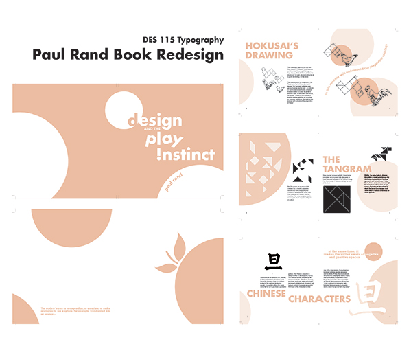

Giving a new face to Paul Rand’s “Design and the Play Instinct,” this book incorporates various principles of typography to produce a fresh, modern design
This redesign consisted of a strict design system to ensure that typography was being used in a manner that complimented the illustrations and other visual elements of the book. I strived to establish consistency by adhering to very structured layout and grid system, while making sure that there was just enough character to make each page distinct from each another.
At first glance, the circles may seem arbitrary and unrelated to the content – initially I picked this because I have an (odd) affinity for perfectly round objects and felt that it would be a nice balance to counter the geometric shapes in the illustrations. However, I briefly remembered reading in the text something spheres turning into oranges, so I decided to include that quote on the inside cover and attribute some deeper meaning behind the theme and colors I chose.
In the beginning stages of the book design, we were required to pick up to two font families and deep dive into all the various font combinations that we would be using for the entire book. This exercise really helped in seeing what fonts complemented each other, and how even minute details like line spacing and kearning could effect the entire visual composition. For my book, I decided to go with a bold, sans-serif font for my headings, paired with various weights from the Rockwell family.
